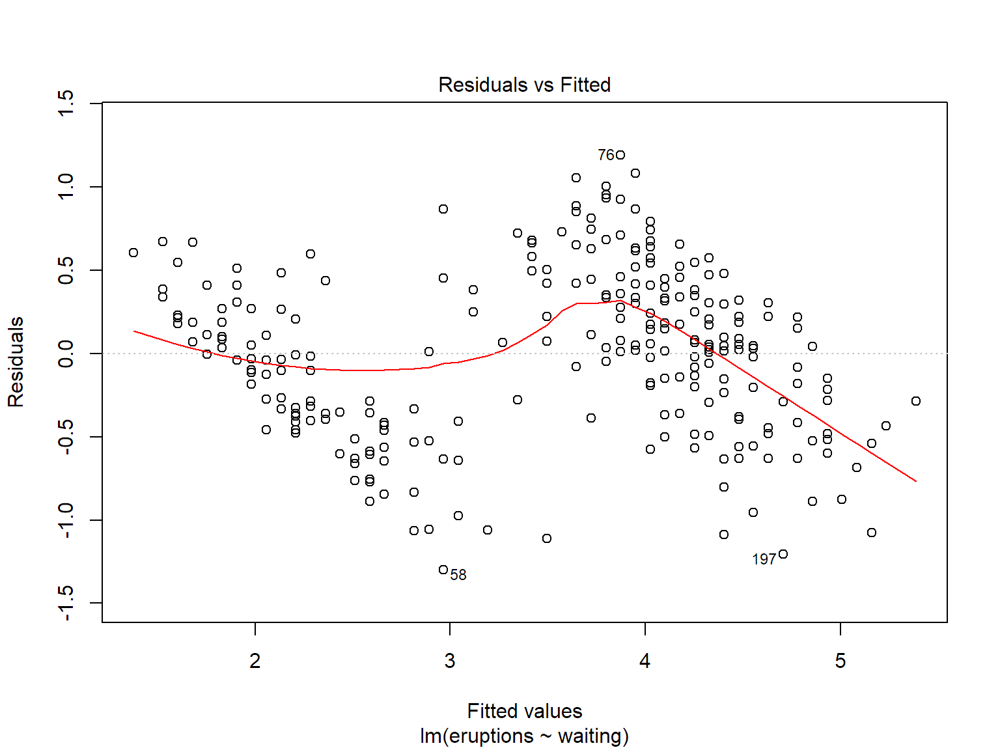

Working with Statistical Models in R
- prepare your data in a data frame or matrix
- call a model function (e.g. lm()), and save the result to a variable
Many model functions use formula syntax to specify the model variables, e.g.,
income ~ gender + age + race + education
where income, gender, age, race, and education are column names in a data frame
- R 'runs' the model
- the function returns a model 'object' (often a list) which contans
- coefficients
- p-values
- independent variables
- observed outcomes
- predicted values
- residuals
- you can save the model object to a variable
- use the model object to
- plot values, curves, etc.
- 'run' the model on another set of data
- print out summaries
Example: Old Faithful

Does the waiting time influence the duration of an erruption?
Let's run a linear regression
head(faithful)## eruptions waiting
## 1 3.600 79
## 2 1.800 54
## 3 3.333 74
## 4 2.283 62
## 5 4.533 85
## 6 2.883 55faithful_lm <- lm(eruptions ~ waiting, data=faithful)
class(faithful_lm)## [1] "lm"The faithful_lm object is class 'lm', but it's also a list.
is.list(faithful_lm)## [1] TRUEnames(faithful_lm)## [1] "coefficients" "residuals" "effects" "rank"
## [5] "fitted.values" "assign" "qr" "df.residual"
## [9] "xlevels" "call" "terms" "model"faithful_lm$coefficients## (Intercept) waiting
## -1.87401599 0.07562795Most model objects have customized versions of core functions like summary() and plot().
summary(faithful_lm)##
## Call:
## lm(formula = eruptions ~ waiting, data = faithful)
##
## Residuals:
## Min 1Q Median 3Q Max
## -1.29917 -0.37689 0.03508 0.34909 1.19329
##
## Coefficients:
## Estimate Std. Error t value Pr(>|t|)
## (Intercept) -1.874016 0.160143 -11.70 <2e-16 ***
## waiting 0.075628 0.002219 34.09 <2e-16 ***
## ---
## Signif. codes: 0 '***' 0.001 '**' 0.01 '*' 0.05 '.' 0.1 ' ' 1
##
## Residual standard error: 0.4965 on 270 degrees of freedom
## Multiple R-squared: 0.8115, Adjusted R-squared: 0.8108
## F-statistic: 1162 on 1 and 270 DF, p-value: < 2.2e-16plot(faithful$waiting, faithful$eruptions, pch=16)
abline(faithful_lm, col="red", lwd=2)plot(faithful_lm, ask=FALSE)
Many packages will have other functions to do specilized plots or other things with the model object. Or running the model may require a series of functions.
General advice:
- have a general understanding of the statistical method
- read the package Vignette
- look for code examples